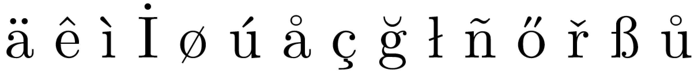
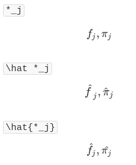

关于 TeX¶
Some nice font family¶
refer to Suggest a “nice” font family for my basic LaTeX template (text and math)
and currently I prefer to newpxtext and newpxmath.
缺少字体¶
报错信息如下图

解决方案为
sudo apt-get install texlive-fonts-extra
有时需要考虑
sudo apt-get install texlive-fonts-recommand
安装 TeXLive 2016¶
记住勾选 create symlinks to standard directories
缺少 .sty 文件¶
比如缺少 mhchem.sty
! LaTeX Error: File 'mhchem.sty' not found
# 1. 检查是否存在 `mhchem.sty` 文件
$ locate mhchem.sty
# 2. 查找需要安装的 package
$ apt-cache search mhchem | grep tex
# texlive-science - TeX Live: Natural and computer sciences
# 3. 安装相应的package
$ sudo apt-get install texlive-science
参考 Latex can’t find .sty files altough packages are installed — TexLive, Ubuntu 12.04
Biblatex¶
记得设置 texstudio 的 biblatex 编译方式，设为 biber，默认为 bibtex.
调整目录的显示层数¶
在使用 tableofcontents 命令的时候，可分别显示 chapter，section，subsection，subsubsection 等目录，有时候，不希望显示级别较低的内容，比如只显示到 chapter 和 section，而 subsection 和 subsubsection 不显示，这时候可通过命令 setcounter 命令来控制，具体做法如下：
\setcounter{tocdepth}{2}
即只显示两级目录。
pdf 添加 Metadata 信息¶
\usepackage[pdfauthor={Your Name},
pdftitle={The Title},
pdfsubject={The Subject},
pdfkeywords={Some Keywords},
pdfproducer={XeLateX with hyperref},
pdfcreator={Xelatex}]{hyperref}
希腊字母加粗问题¶
\mathbf 只对公式中的普通字母 ABC...abcdef 等起作用。
采用
\usepackage{amsmath}
\boldsymbol{\sigma}
或
\usepackage{bm}
\bm{\sigma}
数学字体加粗¶
使用 \mathbf 加粗完后斜体不见了，这不是想要的结果
\usepackage{amsmath}
\boldmath
$$
f(x,y) = 3(x+y)y / (2xy-7)
$$
\unboldmath
或
\usepackage{bm}
$$
\bm{f(x,y) = 3(x+y)y / (2xy-7)}
$$
“texi2dvi” command not found¶
sudo apt-get install texinfo
数学公式插入图片¶
参考 Can I insert an image into an equation?
beamer 中 frame 的 fragile 选项¶
参考 LaTeX 技巧 573：beamer 中使用 Listings 包出现的错误
错误描述
Runaway argument?
! Paragraph ended before \lst@next was complete.
<to be read again>
\par
l.68 \end{frame}
?
解决方案
\begin{frame}[fragile]
\frametitle{Your title}
\begin{lstlisting}
code
\end{lstlisting}
\end{frame}
beamer 中数学字体¶
默认数学字体挺丑的，可以在导言区加入
\usefonttheme[onlymath]{serif}
下面摘录自 Beamer 中数学符号字体
关于tex的字体样式，其实是通用的，与css和windows字体等，都是通用的。来源于西方的字母写法，大致可分为两类：serif （衬线）和sans-serif（无衬线）。
所谓衬线是字体的末端加强，便于阅读。如通常见的Times New Roman, 宋体。sans-serif（sans 源自法语，表示“没有”）字体的代表如Arial，隶书，幼圆。由于衬线的强化作用，serif字体作为正文具有易读性。因此存在大段文本的情况下，常使用衬线字体。但做幻灯片的话，衬线字体会因字体粗细不同，反倒可能降低辨识度。因此建议标题用衬线字体，正文用非衬线字体。
数学符号用衬线字体相对美观一些，而Beamer如果不另行设置，默认全文使用sans-serif字体。因此按上述方式设置一下即可。
源码安装 texlive¶
How to install “vanilla” TeXLive on Debian or Ubuntu?
以及 How to properly install and use texlive with package manager in 14.04
beamer 中导入视频¶
Can XeLaTeX | LuaTeX import movies?
之前用 xelatex + animate 试过展示动态视频，但是只能在 Acrobat Reader 中起作用，不能在 Ubuntu 18.04 上通过 evince 或者 okular 播放。参考 How to make Okular play embedded video，建议使用 multimedia 包，但是这个包不支持 xelatex，会报错
! Undefined control sequence.
\pdfmark
参考 multimedia 的文档，里面确实强调了，
The package can be used together with both dvips plus ps2pdf and pdflatex, though the special sound support is available only in pdflatex.
所以只能用 pdflatex, 不过根据 Video in Beamer with multimedia, undefined control sequence, 似乎也可以用 LuaLaTeX.
LaTeX 中的定理环境¶
makeatletter and makeatother¶
参考 What do \makeatletter and \makeatother do?
Why can’t the end code of an environment contain an argument?¶
参考Why can’t the end code of an environment contain an argument?
What are category codes?¶
When to use @ in an \if statement¶
参考When to use @ in an \if statement
Formatting section titles¶
Letex 画复杂表格的方法¶
latex 列举 enumerate 编号 样式设定¶
二阶导数符号¶
在tex中一般直接用
$f''$
但是在md中，当渲染成网页后，有时会渲染成了普通的引号，如下图

参考How to write doubleprime in latex
\dprime和\trprime需要unicode-mathf^{\prime\prime}代替f''可以解决问题。
bibtex文献加颜色¶
两种方式
第一种
\hypersetup{
colorlinks,
citecolor=green,
linkcolor=black
}
但这个只会对参考文献中可点击的部分起作用，比如实际中只对年份起了作用。
第二种可以自定义命令
\DeclareCiteCommand{\cite}
{\color{red}\usebibmacro{prenote}}%
{\usebibmacro{citeindex}%
\usebibmacro{cite}}
{\multicitedelim}
{\usebibmacro{postnote}}
\DeclareCiteCommand{\parencite}[\mkcolorbibparens]
{\usebibmacro{prenote}}%
{\usebibmacro{citeindex}%
\usebibmacro{cite}}
{\multicitedelim}
{\usebibmacro{postnote}}
将引用的年份用括号框起来¶
参考Put parentheses around year in citation
采用natbib中的\citet
但若已经按照上个问题设置了颜色，则颜色失效。
设置item之间的间隔¶
直接用itemsep命令，如
\begin{itemize}
\setlength\itemsep{1em}
\item one
\item two
\item three
\end{itemize}
xelatex pdf on Travis CI¶
参考
- Setup LaTeX PDF build using Travis CI
- Document building & versioning with TeX document, Git, Continuous Integration & Dropbox
first example¶
- no chinese
- no other packages
before_install:
- "sudo apt-get update && sudo apt-get install --no-install-recommends texlive-fonts-recommended texlive-latex-extra texlive-fonts-extra texlive-latex-recommended dvipng"
script:
- cd proposal
- xelatex test
It turns out that no xelatex.
second example¶
before_install:
- "sudo apt-get update && sudo apt-get install --no-install-recommends texlive-fonts-recommended texlive-latex-extra texlive-fonts-extra texlive-latex-recommended texlive-xetex dvipng"
script:
- cd proposal
- xelatex test
succeed!
install Chinese fonts¶
sudo: required
dist: trusty
before_install:
- "sudo apt-get update && sudo apt-get install --no-install-recommends texlive-fonts-recommended texlive-latex-extra texlive-fonts-extra texlive-latex-recommended texlive-xetex dvipng"
- "wget -c https://sourceforge.net/projects/zjuthesis/files/fonts.tar.gz/download && tar xzf fonts.tar.gz && sudo mkdir -p /usr/share/fonts/truetype/custom/ && mv fonts/* /usr/share/fonts/truetype/custom/ && sudo fc-cache -f -v"
script:
- cd proposal
- xelatex test
wrong error in wget. It should be
wget -c https://sourceforge.net/projects/zjuthesis/files/fonts.tar.gz/download -O fonts.tar.gz
and mv should add sudo
sudo mv fonts/* /usr/share/fonts/truetype/custom/
succeed!
use xeCJK¶
# test.tex
\documentclass{article}
\usepackage{xeCJK}
\setCJKmainfont{STFANGSO.TTF}
\begin{document}
test TeX on Travis CI via xelatex.
毕业论文（设计）题目
浙江大学本科生毕业论文（设计）
\end{document}
# .travis.yml
sudo: required
dist: trusty
before_install:
- "sudo apt-get update && sudo apt-get install --no-install-recommends texlive-fonts-recommended texlive-latex-extra texlive-fonts-extra texlive-latex-recommended texlive-xetex dvipng"
- "wget -c https://sourceforge.net/projects/zjuthesis/files/fonts.tar.gz/download -O fonts.tar.gz && tar xzf fonts.tar.gz && sudo mkdir -p /usr/share/fonts/truetype/custom/ && sudo mv fonts/* /usr/share/fonts/truetype/custom/ && sudo fc-cache -f -v"
script:
- cd proposal
- xelatex test
It reports that
! Font EU1/lmr/m/n/10=[lmroman10-regular]:mapping=tex-text at 10.0pt not loadab
le: Metric (TFM) file or installed font not found.
try to install fonts-lmodern fist.
sudo apt-get install fonts-lmodern
succeed!
However, I cannot find test.pdf in releases, and it contains other files. So set
skip_cleanup: true
and fix typo from tages to tags.
But it still cannot find the test.pdf, and even cannot find any release
so I change file: proposal/test.pdf to file: test.pdf.
It reports that Skipping a deployment with the releases provider because this is not a tagged commit
It still failed.
Then use the normal method
git add .
git commit -m " "
git tag "test"
git push origin master --tags
It succeed!
Then I found that if use before_deploy, it seems that no need to set on.tags = true.
test main.tex¶
称缺失 xcolor.sty，而用 apt-cache search xcolor | grep tex 得到的包为 extra 和 recommended，但这两个包已经安装了，所以怀疑是 --no-install-recommends。
不过突然想到，版本不对，我本机为 TeXlive 2015，而 Travis CI 上为 2013，所以我又在服务器上进行测试，发现 xcolor 在 latex-xcolor 包中。
beamer 不兼容 enumitem¶
详见lists - Trouble combining enumitem and beamer - TeX - LaTeX Stack Exchange
摘录其中一句话
enumitem “disturbs” beamer.
而其中 enumitem 可以实现将列表的序号由数字改成字母，详见 How do I change the enumerate list format to use letters instead of the default Arabic numerals?
替换换行符¶
详见strings - Replacing substrings by linebreaks - TeX - LaTeX Stack Exchange
这是 zju-thesis 模板允许封面标题换行的处理策略，同时参见
APA 带编号¶
默认 APA 格式的参考文献是不带标号的，如果需要，参考
APA bibliography style with numbers
itemize 环境下不同 item 中数学公式对齐¶
参考Sharing alignment between equations in two different items
数学公式后标点¶
Biblatex/biber fails with a strange error about missing recode_data.xml file¶
参考Biblatex/biber fails with a strange error about missing recode_data.xml file
同时在等号上下注明¶
参考 Writing above and below a symbol simultaneously
remark environment¶
In beamer, need to use
\newtheorem{remark}{Remark}
refer to Theorem Numbering in beamer
font size of the documents¶
In the following command
\documentclass[12pt]{article}
10pt, 11pt and 12pt.
Refer to How is 14pt giving font size smaller than 12pt?
fancyhdr warning headheight is too small after setting font size¶
Refer to headheight-problem
align multi cases¶
refer to How can I align multiple cases environment simultaneously?
Key point: enclose one of the entries in the first cases environment in a box whose width is that of the longest of the second cases environment.
or use \hphantom{}.
Problem with \mkbibdateapalongextra of biblatex-apa¶
\DeclareLanguageMapping{american}{american-apa}
refer to Problem with \mkbibdateapalongextra of biblatex-apa
Problems with \printbibliography¶
\usepackage[american]{babel}
\usepackage[style=apa,backend=biber]{biblatex}
\DeclareLanguageMapping{american}{american-apa} %Literaturverzeichnis american-apa style
\addbibresource{library.bib}
\usepackage[babel,threshold=2]{csquotes}
and then
\printbibliography[heading=bibintoc,title=References]
refer to Problems with \printbibliography
带 \hat 时的上标¶
\hat\beta^n
和
\hat\beta{}^n
参考 Position of superscript when superscriptd item has \hat over it
Capacity exceeded [semantic nest …]¶
check your newcommand definition, to see if there is some silly definition such as
\newcommand\silly{\silly}
refer to Capacity exceeded
standalone 环境¶
- 不支持
algorithm - 对于
algorithmic要加上varwidth或preview选项。
参考
- using standalone with algorithmicx or algorithm2e
- standalone does not work with algorithms
- algorithmicx crashes standalone
便携式安装 texlive¶
目前笔记本上 texlive 还是 2015 版的，而 TikePictures.jl 要求的 lualatex 跑不成功，有 bug。于是考虑安装最新版 texlive 2018，只不过笔记本硬盘空间不够，考虑在移动硬盘中安装 texlive。
TexLive 官方说明文档也介绍了 -protable 的安装选项，

其与正常安装时环境变量略有不同，没有单独设置 personal 的配置路径，或许还有其他地方的区别。
另外安装时碰到默认的 mirror 速度很慢的情况，于是考虑换成最近的华为云。
./install-tl -repository https://mirrors.huaweicloud.com/repository/toolkit/CTAN/systems/texlive/tlnet/
路径要指定成
<CTAN/mirror/root/URL>/systems/texlive/tlnet
参考 Change TeX Live Main Repository
operatorname vs mathrm¶
\operatorname:
The argument is written in upright mode but with some additional space before and behind.
\mathrm:
It is like math mode (no spaces), but in upright mode. The font size isn’t changed.
What’s the difference between \mathrm and \operatorname?
bold for theorem title.¶
Without amsthm, the title is bold by default. Refer to Title of the theorem.
With amsthm, one solution is to add these in the preamble.
\usepackage{amsthm}
\makeatletter
\def\th@plain{%
\thm@notefont{}% same as heading font
\itshape % body font
}
\def\th@definition{%
\thm@notefont{}% same as heading font
\normalfont % body font
}
\makeatother
refer to How to make the optional title of a theorem bold with amsthm?
proof by parts¶
\newtheorem{proofpart}{Part}
\newtheorem{theorem}{Theorem}
\makeatletter
\@addtoreset{proofpart}{theorem}
\makeatother
here \@addtoreset{foo}{bar} is to add counter foo to the list of counters \cl@bar to be reset when counter bar is stepped.
Refer to Parts numbering in Proofs
New usage of cases¶
see
\ind{A} = \cases{
1 & if $A$ is true,\\
0 & otherwise,}
refer to Matching Content to MathJax, which originally for illustrating the typeface of mathjax.
数学公式常用字体¶
{kind=link}
refer to What are all the font styles I can use in math mode?
Some ways to number equations¶
splitfor a single numbermultilinefor a single numberalign*withtag
more details refer to A test of Equation Numbering
export to .bib from Zotero¶
The original abstract field is,
Karhunen–Lo`{e}ve decomposition
after exporting to .bib file, it becomes
Karhunen–Lo{\textbackslash}`{e}ve decomposition
and it throws an error when compiling,
! File ended while scanning use of \field.
My first solution is to check if there are some setting when exporting to .bib file to drop some field, such as abstract here, but finally I failed to find one, and here is a discussion in the Zotero community.
Then I try to replace
`{e}
with
{`e}
in the Zotero’s abstract field as said in How to write “ä” and other umlauts and accented letters in bibliography?, which also list several accented characters,
{"a} {\^e} {`i} {.I} {\o} {'u} {\aa} {\c c} {\u g} {\l} {\~n} {\H o} {\v r} {\ss} {\r u}

but it still doesnt work.
Finally, I directly correct the exported file using the above technique, and it works. But I still think it is not a good idea since I prefer to export without any further modifications. [TODO]
\hat f 的脚标太远¶
当对 f 同时加上 hat 和脚标时，脚标会离得很远，感觉很丑，如

一种解决方案如图所示，将 hat 框住脚标。当然这个解决方案对于其它字符并不需要，比如对于 pi, 反而不好。
display full name¶
For natbib, check the documentation of natbib by typing
texdoc natbib
longnamesfirst option will display full name for the first citation of any given reference, but all subsequent ones will be used with et al.
- without
longnamesfirst, all citations would beet al. - with
\citet*,\citep*, the citation would be full author list.
For biblatex, seems that we can set the global argument maxcitenames to control the number of author in the citation, such as only display all authors, of multi-author works, the first time a citation is used with biblatex
图片缩放 resizebox¶
For rescaling in general you can use a
resizebox(from thegraphicxpackage), which also works fortikzpicture. The first argument is the width, the second the height, or!to scale proportionally.source: @Marijn
and application in Forcing subfigures to have same height and take overall X% of linewidth in LaTeX
Make a love heart¶
- by equation:
- by pure latex
- by tikz based on filtered paths
refer to Can we make a love heart with LaTeX?